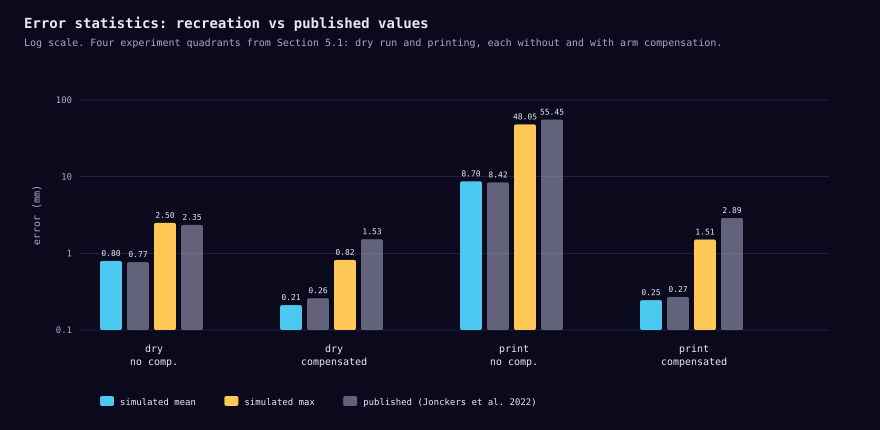
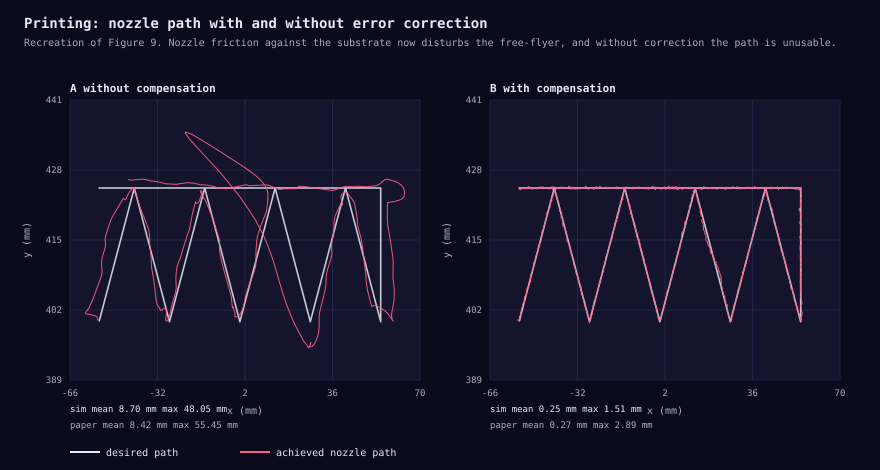
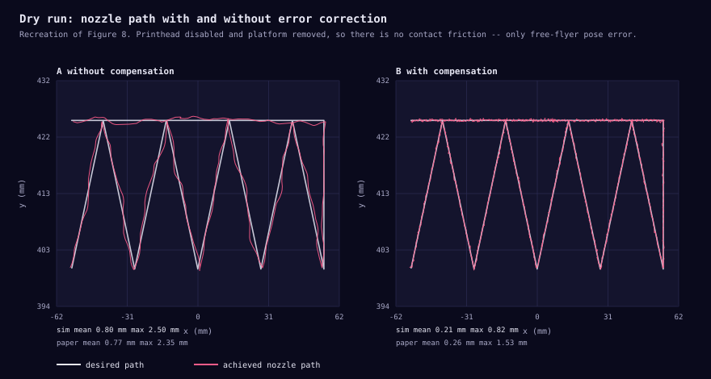
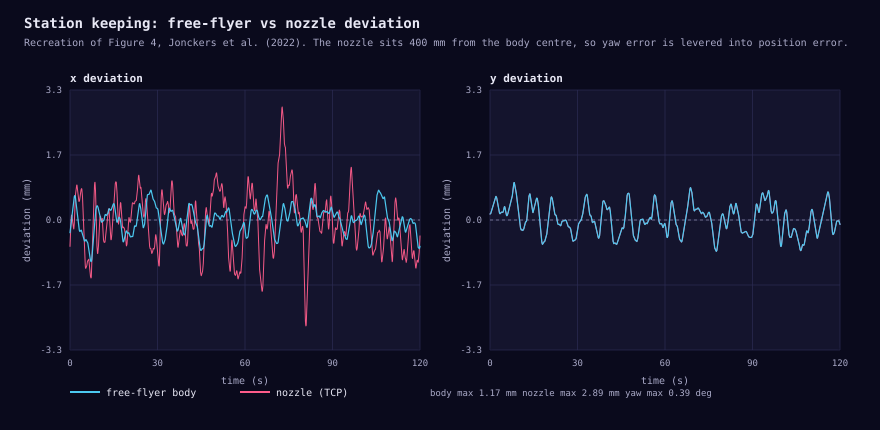
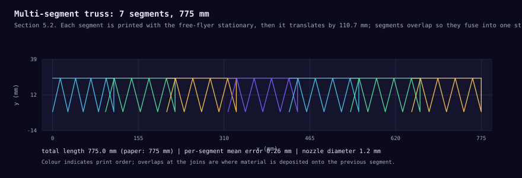

Paper Recreation · Python
Rebuilding a Free-Flying 3D Printer
I took a 2022 paper on satellites that 3D-print structures larger than themselves, rebuilt its simulation from scratch in Python, and checked whether my version reproduces the numbers they published. It does — 16 out of 16 reported quantities land within tolerance.
The paper
Jonckers, Tauscher, Thakur & Maywald (2022), “Additive Manufacturing of Large Structures Using Free-Flying Satellites”, Frontiers in Space Technologies 3:879542. Institut für Raumfahrtsysteme, TU Braunschweig. doi:10.3389/frspt.2022.879542
The idea is a neat inversion of normal 3D printing. Instead of a fixed printer building something inside its own volume, a free-flying satellite carries a robotic arm with an extruder and prints a structure segment by segment, repositioning itself between segments. The output can be arbitrarily long — far bigger than the satellite or its launch fairing.
They tested it on the ELISSA air bearing table at TU Braunschweig: a 20.2 kg robot floating on an 80 µm air cushion over a 4 × 7 m table, which gives frictionless motion in 3 degrees of freedom and stands in for the free-floating conditions of orbit. It printed a 775 mm truss from 7 overlapping segments.
What the model contains
Roughly 1,500 lines of Python across nine modules, numpy
only. The physics runs on a 2 ms step, the pose controller at
50 Hz, and the arm command loop at the paper's stated 60 ms.
- Rigid-body dynamics — planar 3-DoF body, semi-implicit integration.
- Thruster allocation — the paper's u = M f and f = 2 M†u where the factor of 2 compensates for the thrusters being unidirectional, plus a PWM deadband and 8-bit quantisation for the propeller drive.
- Three PID controllers (x, y, yaw) with anti-windup, fed by a simulated optical tracking system: noisy pose, velocity by finite differencing then moving-average filtering.
- Disturbances — residual gravity from table tilt (up to 9.6 mm/s², slowly varying in space and direction), aerodynamic noise, air-bearing drag, and nozzle contact friction.
- G-code interpolation — the paper's intermediate-point scheme, which subdivides each move into ~0.2 mm steps and extends the final interval so no command violates the 60 ms minimum period.
- The compensation algorithm — their Equations 3–5, predicting the arm base pose one step ahead and solving for the arm goal in its own base frame.
Results
The paper's key experiment is a 2×2: dry run versus real printing, each with and without arm compensation. Here is my recreation against their published figures.

| Condition | Paper mean | Sim mean | Paper max | Sim max |
|---|---|---|---|---|
| Dry run, no compensation | 0.77 | 0.80 | 2.35 | 2.50 |
| Dry run, compensated | 0.26 | 0.21 | 1.53 | 0.82 |
| Printing, no compensation | 8.42 | 8.70 | 55.45 | 48.05 |
| Printing, compensated | 0.27 | 0.25 | 2.89 | 1.52 |
All values in mm. The compensation algorithm cuts mean printing error by 97% in both the paper and the recreation.




Where the numbers came from
This is the part I care most about being honest regarding. A paper is never a complete specification, and the gaps are where a recreation quietly becomes fiction. Every parameter in the model carries a provenance tag:
paper stated explicitly — mass 20.2 kg, eight thrusters, 400 mm TCP offset, 3.33 mm/s print speed, 60 ms command period, 1.2 mm nozzle, 0.8 mm layer height, 180 °C, 9.6 mm/s² residual gravity, 110 mm segment, 7 segments, 775 mm total.
derived computed from those — e.g. the 0.1998 mm interpolation step is just speed × period, and the 110.71 mm segment advance is 775 / 7.
inferred not in the paper at all: PID gains, yaw inertia, thruster saturation and time constant, tracking noise, and — most significantly — the nozzle friction force.
Two details I could recover from the paper's own arithmetic rather than guess, which was satisfying:
- Which way the arm points. The paper never dimensions the arm mounting direction, but it reports mean errors of 0.68 mm in x versus 0.28 mm in y. Yaw error displaces the nozzle perpendicular to the mounting offset, so for the error to land in x, the arm must be mounted along the body y axis. Getting this backwards initially gave me a symmetric 0.69/0.62 split — the asymmetry is the fingerprint of the geometry.
- The error budget closes. Their ±2 mm position envelope plus 0.5° of yaw at a 400 mm lever gives 2.0 + 3.49 = 5.49 mm, against the “up to 5.5 mm in the x direction” they quote. And √(0.68² + 0.28²) = 0.735 mm recovers their 0.77 mm total. Those consistency checks let me tune the attitude loop to match their performance rather than simply making it as accurate as possible.
I also think there is a small transposition in their Equation 3. As printed, it composes base-to-TCP from world-to-TCP and world-to-base with the inverse on the right; for non-commuting rigid transforms that does not type-check, and it only coincides when yaw is zero. Almost certainly a notation slip rather than a bug in their code, since their results could not have come out otherwise. The model implements the composition that actually works and the test suite documents why.
Testing
122 tests, built around hypothesis for
property-based testing. The distinction that mattered: rather than
asserting specific numbers, assert the invariants that must hold
for any input.
- Thruster allocation round-trips:
M(2M†u) = ufor any wrench, and forces are never negative (the thrusters can't pull). - Transform inverses round-trip; rotations stay orthonormal; distances are preserved.
- Interpolated moves always respect the 60 ms floor, and the subdivided distances always sum exactly to the move length.
- Compensation never makes nozzle accuracy worse, for any free-flyer pose error — the paper's central claim, as a property.
- Truss geometry always respects the 5.5 mm height and 45° angle limits imposed by nozzle geometry, for any segment count.
Two of these caught real bugs. One found that friction torque vanishes when travel is parallel to the lever arm — correct physics, so my test was wrong, not the code. Another exposed that my print was accidentally centred on the free-flyer's own centre of rotation, which cancelled the 400 mm lever to zero and silently deleted the whole effect the paper is about.
16/16 quantities within tolerance dry run, no compensation mean error 0.77mm -> 0.80mm 3.4% print, no compensation mean error 8.42mm -> 8.70mm 3.3% print, compensated mean error 0.27mm -> 0.25mm 9.1% dry run, no compensation mean error, X axis 0.68mm -> 0.69mm 1.0% dry run, no compensation mean error, Y axis 0.28mm -> 0.29mm 2.7% compensation benefit print mean reduction 97% -> 97.2% 0.2% multi-segment truss total length 775mm -> 775.0mm 0.0%
Honest limitations
- 3 DoF, not 6. This matches the paper — ELISSA is a planar table and they say so explicitly. But it means the model cannot address what they flag as the real risk in orbit: out-of-plane error reducing layer height, increasing friction, and making everything worse.
- The arm is kinematically ideal. No inverse kinematics, no joint limits, no singularities — just a first-order lag toward the commanded pose. The Meca500's 5 µm repeatability is negligible next to millimetre-scale errors, so this is defensible, but a real 6-axis arm near a singularity would not behave this way.
- No thermal or material model. Nothing about cooling rate, layer bonding or extrusion dynamics. The paper's own conclusion is that PLA is unsuitable for space and that bonding at these temperatures was weak — all of which lives outside this simulation.
- Segment joining is open-loop. Like the paper, the model assumes each previous segment was printed perfectly and the free-flyer moves a known distance. They note this assumption may not hold in orbit, where you would want computer vision to find the real structure.
- Maximum errors are consistently under-predicted (1.52 vs 2.89 mm compensated; 48 vs 55 mm uncompensated). My disturbances are probably too smooth — real hardware has transients my model lacks, which is exactly what the paper hints at when it attributes residual maximum error to “sudden changes in the free-flyer pose, which the compensation algorithm struggles to correct for.”
Running it
cd sim uv sync --extra dev # or: python3 tools/run_tests.py uv run pytest # 122 tests uv run python -m ffam.experiments # validation report uv run python tools/make_figures.py # regenerate these figures
Built with uv for dependency management. The
sandbox I developed in had no PyPI access, so there is a small vendored
pytest/hypothesis shim that lets the suite run offline; with network
access the real libraries are used instead. The figures are hand-emitted
SVG for the same reason — which turned out better for the web
anyway, at 5–33 KB each and infinitely scalable.